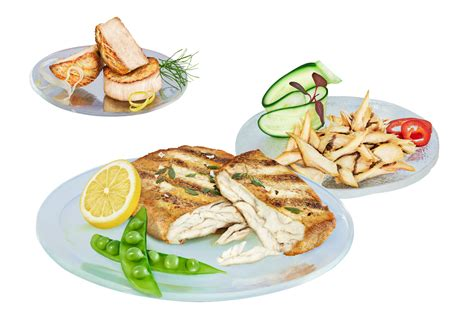

English | Italiano | Français | Español | Deutsch | 中文 | 日本語 | Bahasa Indonesia | Português | Русский
精密発酵
精密発酵により、動物の代わりに酵母や真菌などの微生物を使って 乳や卵のタンパク質などを製造することができます。
培養肉や植物性肉と同様、発酵由来のタンパク質は地球にも人にも動物にも良い
精密発酵は、工業的な酪農への依存を減らし、その気候、環境、動物への影響を軽減できます。
English | Italiano | Français | Español | Deutsch | 中文 | 日本語 | Bahasa Indonesia | Português | Русский
精密発酵により、動物の代わりに酵母や真菌などの微生物を使って 乳や卵のタンパク質などを製造することができます。
培養肉や植物性肉と同様、発酵由来のタンパク質は地球にも人にも動物にも良い
精密発酵は、工業的な酪農への依存を減らし、その気候、環境、動物への影響を軽減できます。

得られるタンパク質は、従来製造されている動物性タンパク質と同一であり、様々な製品（チーズ、アイスクリーム、牛乳、バター、プロテインパウダー、アルブミンなど）の製造に使用可能。
遺伝子組換え微生物株の使用は新しいものではなく、医療や食品の分野で数十年前から使用されています：
テンペ、ビール、ヨーグルト、キムチ、ザワークラウトなど。

"第二の家畜化"
私たちはまず大生物（動物や植物）を家畜化しました。
そして今、微生物の家畜化が始まっています。
多細胞生物の養殖から単細胞生物の養殖へと進化することで
より少ない資源でより多くのことができるようになりました。
工業的畜産は気候変動の主な原因です：温室効果ガス排出量の14％から51％を占め、運輸部門全体を上回っています。
工業的畜産は、私たちが直面している最も緊急な環境問題の主要な原因でもあります：

肉1カロリーを得るために、鶏1羽に9カロリーの餌を与える必要があります。
つまり、植物性タンパク質に比べ、カロリーあたり9倍の土地、9倍の水、9倍の資源。豚肉や牛肉の場合、資源の浪費はさらにひどい。
農地の77%は食肉を生産するために家畜の飼料として使用されていますが、この食肉は人が食べるタンパク質の30%、カロリーの18%にしかなりません。
畜産は農業用水の29％を消費し、スラリーで地下水を汚染
肉の需要は2050年までに倍増すると予想されています。増え続ける世界人口を、たった1つの惑星で動物性タンパク質でまかなうことは不可能です。

抗生物質の70％が家畜に使用
伝染病の75%は人獣共通感染症由来
次のパンデミックは、コビッド19のように、動物搾取によって引き起こされるでしょう。
乳製品およびその他の精密発酵製品には含まれていません：

毎年、肉、乳製品、魚、卵を生産するために、750億頭の家畜 （鶏、豚、牛など）と2兆7000億頭の海洋動物が 殺されています。
これが食糧生産の未来を決める4つの主要技術です：
微生物をベースとし、酵母や菌類を利用してタンパク質やその他の成分（油脂、色素など）を生産することが可能。

真菌の菌糸体をベースに、栄養価の高いマイコプロテインを短期間で生産することができます。例クオーン

細胞ベース、バイオリアクター内で繁殖する動物細胞を使用し、肉や魚を動物と同等のバイオアイデンティカルに生産可能

水と空気（水素、酸素、窒素、炭素）を供給し、非遺伝子組み換え微生物によって生産された完全な天然タンパク質。
"これは農業の発明以来、食糧システムの最大の混乱となるでしょう"
培養細胞、精密発酵、またはバイオマス発酵を使った食品を紹介します。


2026年上半期の精密発酵への投資は1億ユーロで、2025年通年の9700万ユーロを上回りました。培養肉はペットフードを含め1800万ユーロでした。 出典: gfieurope.org, gfieurope.org
欧州企業が調達した民間投資額（百万ユーロ）。2026年は1〜6月のみで、年間と半年間の合計は直接比較できません。
2020〜2025年に欧州の資金提供者は代替タンパク質研究に13億ユーロを投じ、うち29%が発酵、9%が培養肉・水産物でした。オランダは両技術のプログラムに6000万ユーロを拠出しました。 出典: gfieurope.org, cellulaireagricultuur.nl
ダノンなどは2026年、2000万ユーロ超を投じた発酵の共同スケールアップ施設をフランスで開設しました。BelとStanding Ovationはカゼインの工業規模生産を発表し、ダノンの投資部門も3000万ユーロの資金調達に参加しました。 出典: danone.com, groupe-bel.com, standing-ovation.co
Fonterraが支援するViviciは2025年に3250万ユーロを調達し、2026年にEUから1250万ユーロの資金を得ました。予定された米国の生産パートナーは2026年10月時点で施設稼働に資金を必要としていました。 出典: invest-nl.nl, agfundernews.com, agfundernews.com
食肉企業JBSはスペインのBioTech Foods、工場、ブラジルの研究センターを含む1億ドルの計画を発表しました。センターは2026年に開設されましたが、スペイン工場の稼働状況は未確認です。Tysonが支援したBeliever Meatsは施設を完成後、事業を停止しました。 出典: api.mziq.com, cnnbrasil.com.br, ag.ingredion.com
中国は2021〜2025年の農業研究計画に培養肉などの技術を含めました。FAOによれば2021年、中国は水生動物食品の世界の見かけの消費量の36%を占めました。 2021年に発表された推計では、中国は世界の食肉消費量の28%を占めていました。 TIME. 出典: nyncj.cngy.gov.cn, digitallibrary.un.org
精密発酵と培養肉は、食料生産が直面する課題に対応できる可能性があります。しかし、研究を進め、コストを下げ、生産を拡大するには、さらなる投資が必要です。
政府は、誰もが利用できる研究への資金提供、スタートアップの支援、新製品の市場投入を容易にする共同施設の整備を通じて貢献できます。知識の共有と協力の促進は、より多くの研究者や企業の前進につながります。
食品の安全を確保し、イノベーターに予測可能な市場への道筋を示すためには、明確で科学に基づいた規制も不可欠です。
代替タンパク質は、気候変動、環境破壊、動物福祉など、複数の課題に同時に取り組む助けとなる可能性があります。公的・民間投資は、その可能性を実用的で手に取りやすい食品の選択肢へと変える助けになります。
公的研究と投資を支援するよう、地域の議員に呼びかけましょう。
精密発酵、バイオマス発酵、培養肉がその可能性を十分に発揮するには、さらなる投資が必要です。投資家、政策立案者、研究助成機関がこれらの技術の進展を支えることができます。


Good Food Instituteによる世界の代替タンパク質企業の一覧をご覧ください。